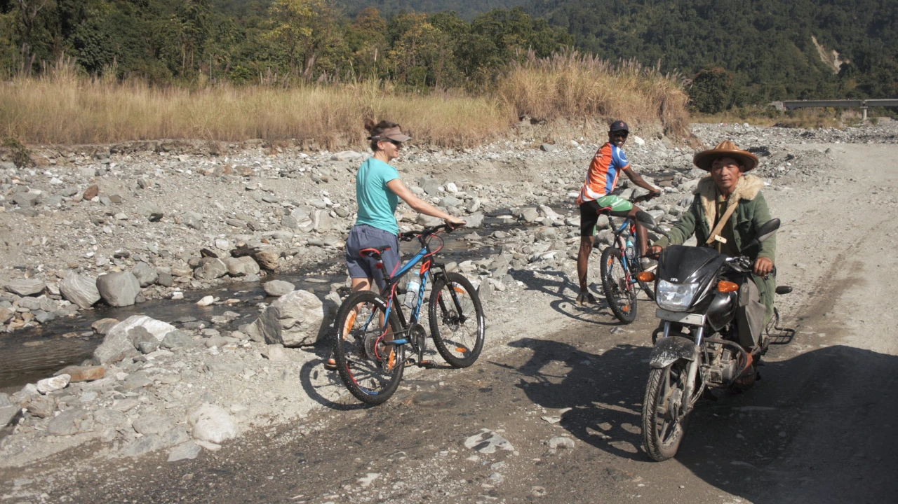

Fixed Departure
Fixed Departure
Destination · Multi-state
Multi-state Journeys
Longer routes that connect states, landscapes and cultures into one wider Northeast India experience.
Why Multi-state
For travellers who want the Northeast as a connected region
Multi-state journeys are for travellers who want to see how quickly Northeast India changes: from river valleys to highlands, tea country to monasteries, rainforest to village roads and festival towns.
They reveal the region's remarkable human variety too, moving through different tribal homelands, languages, food traditions, faiths and cultural worlds within one journey.
These routes are ideal when you want a wider experience of the Northeast rather than focusing on a single state.
Multi-state journeys
Tours that include more than one state
Fixed Departure
 Fixed Departure
Fixed Departure
 Fixed Departure
Fixed Departure
 Cycling
Cycling
Watershed of the Brahmaputra
Cycling through Upper Assam and eastern Arunachal's river valleys.
View tour Cycling
Cycling
Cycling in Western Arunachal
The Road to Tawang, moving from Assam into the Monyul region of Arunachal Pradesh.
View tour Cycling
Cycling
The Mishmi Hills Explorer
A cycling route linking Upper Assam with remote eastern Arunachal.
View tour Family
Family
Meghalaya and Assam Family Holiday
A family route combining Meghalaya's hills with Assam's wildlife and tea country.
View tour Family
Family
Western Arunachal Family Holiday
A family holiday through Assam's foothills and western Arunachal's Monyul region.
View tour Family
Family
Eastern Arunachal Family Adventure
An active family route through Assam and eastern Arunachal's river landscapes.
View tour
Multi-ActivityMulti-Activity Tour of Eastern Arunachal Pradesh
Hike, bike, raft and explore culture across Assam and eastern Arunachal's river country.
View tour Nature & Culture
Nature & Culture
 Nature & Culture
Nature & Culture
 Motorcycle & Overland
Motorcycle & Overland
Motorcycle Tour of 4 States Northeast India
A longer motorcycle route across the eastern arc of the Northeast.
View tour Motorcycle & Overland
Motorcycle & Overland
5 States Northeast India Motorcycle Tour
South of the Brahmaputra across Assam, Meghalaya, Tripura, Mizoram and Nagaland.
View tourPlan multi-state
Build a route across the region
Tell us how much time you have and the kind of journey you want, and we will help connect the right states, routes and experiences.